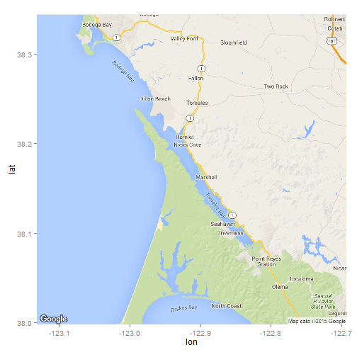

Provided model is a linear model that allows to predict water tempreture in Tomales Bay (Point Reyes, CA) based on wind, air temp and pressure.
Tomales Bay is one of the warmest place in San Francisco Bay Area. Provided model tries to predict water tempreture. This information could be really valuable for a good weekend escape ;)
